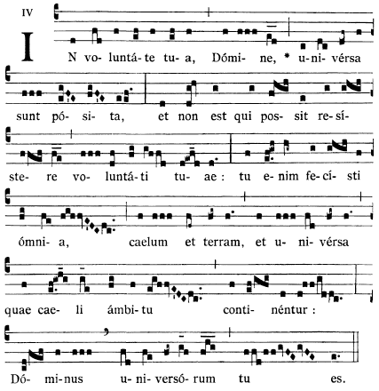
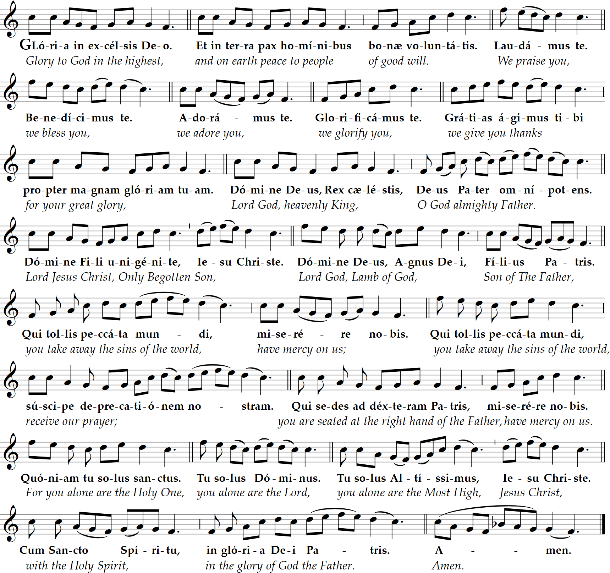
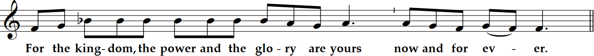

Twenty-seventh Sunday in Ordinary Time
6 PM Mass
Prelude “Allegro moderato in D” G.W. Chadwick (1854-1931)
Twenty-seventh Sunday in Ordinary Time
6 PM Mass
Prelude “Allegro moderato in D” G.W. Chadwick (1854-1931)
All things are submitted to your will, O Lord, and no one can resist your decisions; you have made all things, heaven and earth, and all that is contained under the vault of the sky; you are the master of the universe.



Let me now sing of my friend, my friend's song concerning his vineyard. My friend had a vineyard on a fertile hillside; he spaded it, cleared it of stones, and planted the choicest vines; within it he built a watchtower, and hewed out a wine press. Then he looked for the crop of grapes, but what it yielded was wild grapes. Now, inhabitants of Jerusalem and people of Judah, judge between me and my vineyard: What more was there to do for my vineyard that I had not done? Why, when I looked for the crop of grapes, did it bring forth wild grapes? Now, I will let you know what I mean to do with my vineyard: take away its hedge, give it to grazing, break through its wall, let it be trampled! Yes, I will make it a ruin: it shall not be pruned or hoed, but overgrown with thorns and briers; I will command the clouds not to send rain upon it. The vineyard of the LORD of hosts is the house of Israel, and the people of Judah are his cherished plant; he looked for judgment, but see, bloodshed! for justice, but hark, the outcry!
Brothers and sisters: Have no anxiety at all, but in everything, by prayer and petition, with thanksgiving, make your requests known to God. Then the peace of God that surpasses all understanding will guard your hearts and minds in Christ Jesus. Finally, brothers and sisters, whatever is true, whatever is honorable, whatever is just, whatever is pure, whatever is lovely, whatever is gracious, if there is any excellence and if there is anything worthy of praise, think about these things. Keep on doing what you have learned and received and heard and seen in me. Then the God of peace will be with you.
Jesus said to the chief priests and the elders of the people: "Hear another parable. There was a landowner who planted a vineyard, put a hedge around it, dug a wine press in it, and built a tower. Then he leased it to tenants and went on a journey. When vintage time drew near, he sent his servants to the tenants to obtain his produce. But the tenants seized the servants and one they beat, another they killed, and a third they stoned. Again he sent other servants, more numerous than the first ones, but they treated them in the same way. Finally, he sent his son to them, thinking, 'They will respect my son.' But when the tenants saw the son, they said to one another, 'This is the heir. Come, let us kill him and acquire his inheritance.' They seized him, threw him out of the vineyard, and killed him. What will the owner of the vineyard do to those tenants when he comes?" They answered him, "He will put those wretched men to a wretched death and lease his vineyard to other tenants who will give him the produce at the proper times." Jesus said to them, "Did you never read in the Scriptures: The stone that the builders rejected has become the cornerstone; by the Lord has this been done, and it is wonderful in our eyes? Therefore, I say to you, the kingdom of God will be taken away from you and given to a people that will produce its fruit."
Homily + Profession of Faith
I believe in one God, the Father almighty,
maker of heaven and earth,
of all things visible and invisible.
I believe in one Lord Jesus Christ,
the Only Begotten Son of God,
born of the Father before all ages.
God from God, Light from Light, true God from true God,
begotten, not made, consubstantial with the Father;
through him all things were made.
For us men and for our salvation he came down from heaven,
and by the Holy Spirit was incarnate of the Virgin Mary,
and became man.
For our sake he was crucified under Pontius Pilate,
he suffered death and was buried,
and rose again on the third day
in accordance with the Scriptures.
He ascended into heaven
and is seated at the right hand of the Father.
He will come again in glory to judge the living and the dead
and his kingdom will have no end.
I believe in the Holy Spirit, the Lord, the giver of life,
who proceeds from the Father and the Son,
who with the Father and the Son is adored and glorified,
who has spoken through the prophets.
I believe in one, holy, catholic and apostolic Church.
I confess one Baptism for the forgiveness of sins
and I look forward to the resurrection of the dead
and the life of the world to come. Amen.
Prayer of the Faithful + Offertory + Liturgy of the Eucharist
“There was a man in the land of Hus whose name was Job, a blameless, upright and God-fearing man; Satan asked to be allowed to tempt him, and the Lord gave him power over his possessions and his body; and so, he destroyed his possessions and his children, and he ravaged his flesh with horrible sores.”
May the Lord accept the sacrifice at your hands,
for the praise and glory of his name, for our good, and the good of all his holy Church.


Deliver us Lord from every evil, graciously grant peace in our day, that by the help of your mercy we may be always free from sin
and safe from all distress, as we await the blessed hope, and the coming of our Savior, Jesus Christ.

Lord, I am not worthy that you should enter under my roof, but only say the word and my soul shall be healed.
1. My eyes long to see your promise.
When will you comfort me?
---
2. How long can your servant survive?
When will your judgment doom my foes?
---
3. In your mercy give me life,
to observe the testimonies of your mouth.


Queen, mother of mercy: our life, sweetness, and hope, hail. To thee do we cry, poor banished children of Eve.
To you we sigh, mourning and weeping in this va ley of tears.
Turn then, our advocate, those merciful eyes toward us. And Jesus, the blessed fruit of thy womb, after our exile, show us.
O clement, O loving, O sweet Virgin Mary
"St. Michael the Archangel, defend us in battle. Be our protection against the wickedness and snares of the devil.
May God rebuke him, we humbly pray; and do thou, O Prince of the heavenly hosts, by the power of God,
cast into hell Satan and all the evil spirits who prowl about the world seeking the ruin of souls. Amen."
Postlude “Allegro in D” Charles V. Stanford (1852-1924)